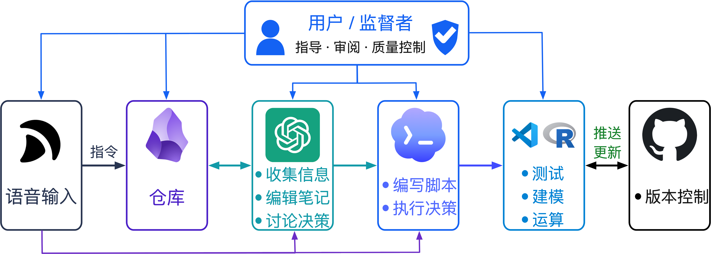

新的工作 SOP
最近正在更积极地在工作中使用 AI 工具，帮我构思项目、搭建组件、建模。
这张图大致整理了我现在的一套工作流程：从语音输入开始，到 Obsidian 作为仓库，再到 ChatGPT 和 Codex 分别承担信息整理、讨论决策、指令生成、脚本编写和测试构建，最后进入本地编程工作区，并通过 GitHub 做版本控制和构建更新。整个过程里，人的角色更像是监督者，负责指导、审阅和质量控制。
AI 的发展速度和能力都比我原先想象得更快。甚至经常觉得，并不一定要用最强的模型，因为它能力太强，反而容易把原本简单的问题复杂化。
这些工具确实大幅提升了项目推进的效率，也拓宽了一个人能够实现的事情的边界。但与此同时，一个新的问题也越来越明显：
重要的可能不再是“还能做多少”，而是如何控制这个不断扩张的广度，让它始终停留在一个人仍然可以理解、判断和有效掌控的范围内。
